Practical system design
System design handbook
Architecture concepts, worked examples, production trade-offs, and design exercises.
Lesson 0001 · Caching
Cache-Aside
In this lesson

Two read paths. A hit avoids a database read; a miss reads the database and fills the cache. Updates need an invalidation or freshness policy.
Reduce repeated database work while keeping the database as the source of truth.
The concept
The application checks a cache before reading the database. On a cache miss, it reads the database and stores the result in the cache for later requests.
request → cache → miss → database → update cache → response
When to use it
- Many requests repeatedly read the same data.
- Database reads are slow or expensive.
- Slightly stale data is acceptable for a limited time.
Real-world example
An online store caches product details for five minutes. Popular products are served from Redis, reducing database load. The database remains authoritative.
Trade-offs
- Benefit: lower latency and database load.
- Cost: more infrastructure and invalidation logic.
- Risk: users may briefly receive stale data.
- Failure mode: a cache outage can suddenly overload the database.
Common mistakes
- Caching sensitive data without proper isolation or encryption.
- Using one expiration time for data with different freshness needs.
- Not preventing a cache stampede when a popular key expires.
- Treating the cache as durable storage.
Think today
Your product page gets 10,000 reads per minute but changes twice per day. What would you cache, for how long, and how would you invalidate it after an update?
Primary source
Read: Microsoft Azure Architecture Center: Cache-Aside Pattern .
Ask a follow-up question if any part of the pattern is unclear.
Contents · Markdown edition
Lesson 0002 · Scalability
Horizontal Scaling
In this lesson
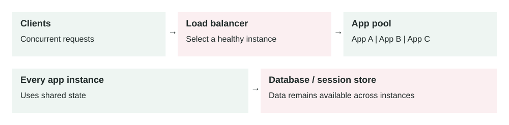
Add application instances to share traffic. Local-only sessions break when a user's next request reaches a different instance; shared storage can still become the bottleneck.
Handle more traffic by adding application instances instead of making one machine larger.
The concept
Horizontal scaling, or scaling out, runs multiple instances of the same service. A load balancer distributes requests across healthy instances.
clients → load balancer → app 1 / app 2 / app 3
When to use it
- Traffic can exceed the capacity of one machine.
- The service needs higher availability.
- Demand changes enough to benefit from automatic scaling.
Real-world example
A ticketing API normally runs three instances. Before a major sale, it automatically grows to twenty instances, then scales back after demand falls.
Important requirement
Application instances should be stateless. Store sessions, uploaded files, and shared state in external systems such as Redis, object storage, or a database. Any healthy instance must be able to handle the next request.
Trade-offs
- Benefit: more capacity and better fault tolerance.
- Cost: load balancing, monitoring, and deployment become more complex.
- Limit: the database may become the next bottleneck.
- Risk: scaling too slowly can still cause overload during sudden spikes.
Common mistakes
- Keeping user sessions only in instance memory.
- Scaling on CPU alone without watching latency or queue depth.
- Stopping instances before active requests finish.
- Adding servers without load testing downstream dependencies.
Think today
Your API grows from two instances to ten, but latency stays high. Which shared dependency would you inspect first, and what metric would confirm the bottleneck?
Connect yesterday
Cache-aside can reduce database pressure after application servers scale out, but it does not remove database limits.
Primary source
Read: AWS: What is Amazon EC2 Auto Scaling? .
Ask a follow-up question if any part of the pattern is unclear.
Contents · Markdown edition
Lesson 0003 · Scalability
Vertical Scaling
In this lesson
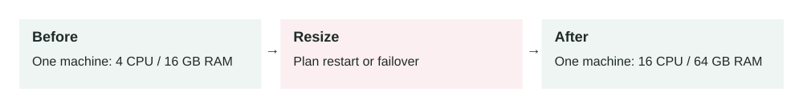
The same machine role gets more resources. This helps a measured CPU or memory limit, but a larger single machine still needs a separate availability plan.
Increase the CPU, memory, storage performance, or network capacity of one machine instead of adding more machines.
The problem it solves
A service can become slow because its current machine has insufficient resources. CPU may remain near 100%, memory pressure may cause swapping, or storage may be unable to handle enough operations per second. Vertical scaling, also called scaling up, moves the workload to a larger machine.
4 CPU / 16 GB RAM → 16 CPU / 64 GB RAM
How it works
- Measure which resource is limiting the workload.
- Select a machine with more of that specific resource.
- Back up data and prepare a rollback plan.
- Stop, resize, and restart the machine when required.
- Run health checks and compare performance with the baseline.
The application architecture usually stays unchanged. This makes vertical scaling operationally simpler than distributing work across multiple nodes. However, the larger machine remains one failure domain.
Main components
- Compute: more CPU cores or faster processors.
- Memory: more RAM for working data, connections, and caches.
- Storage: more capacity, IOPS, or throughput.
- Network: higher bandwidth and packet-processing limits.
- Monitoring: evidence that identifies the real bottleneck.
Example 1: growing database
A PostgreSQL database serves a business application. Its active dataset grows from 10 GB to 80 GB, and frequently used indexes no longer fit in memory. Disk reads increase and query latency rises from 30 ms to 300 ms.
Moving from 16 GB to 128 GB of RAM allows the database to retain more indexes and frequently accessed pages in memory. This can be the simplest correct solution while the workload still fits comfortably on one database server.
Example 2: production resize under load
A payment API runs on one 4-vCPU VM and receives 200 requests per second. During payroll processing it reaches 95% CPU, p95 latency grows from 150 ms to 2 seconds, and requests begin timing out.
The team temporarily moves it to a 16-vCPU VM. Before resizing, they drain traffic, take a snapshot, confirm driver and storage compatibility, reserve a maintenance window, and prepare the old machine type as rollback. The resize restores capacity quickly, but the team then removes the single point of failure by moving toward multiple stateless instances.
When to use it
- You need a fast capacity increase with minimal architectural change.
- The application cannot easily distribute work across multiple nodes.
- A database requires strong coordination and still fits on one machine.
- The larger machine is affordable and comfortably handles future growth.
When not to rely on it
- The service requires high availability across failure domains.
- Traffic changes rapidly and frequently.
- The workload is approaching the provider's largest machine size.
- The bottleneck is inefficient code, slow queries, locks, or an external API.
Implementation and reliability
- Use CPU, memory, disk latency, IOPS, network, and application latency metrics.
- Load test the new size; additional CPU does not fix every bottleneck.
- Plan downtime because some platforms require stopping the machine.
- Verify instance type, architecture, drivers, disks, and network compatibility.
- Take tested backups and define exact rollback conditions.
- Run post-change health checks before restoring full traffic.
Security considerations
- Preserve encryption, firewall, identity, and audit settings during replacement.
- Do not expose a temporary public address while testing the larger machine.
- Protect snapshots because they may contain production data and credentials.
- Use infrastructure as code to reduce configuration drift during resizing.
Vertical scaling can improve performance immediately, but cost often increases in large steps. A machine with four times the memory may cost roughly four times as much even when memory was not the real bottleneck. Larger machines can also increase the financial and operational impact of a single failure.
Key trade-offs
- Simplicity vs resilience: one larger node is simpler but less fault tolerant.
- Speed vs limits: resizing is fast, but every platform has a maximum size.
- Low engineering effort vs higher unit cost: architecture stays simple, but large machines can be expensive.
- Consistency vs availability: one database avoids distributed coordination, but maintenance can cause downtime.
Common mistakes and edge cases
- Resizing before identifying whether CPU, memory, disk, or code is the constraint.
- Assuming more CPU will fix lock contention or sequential processing.
- Ignoring downtime, IP address changes, or machine compatibility.
- Scaling up repeatedly without defining the point to redesign or scale out.
- Increasing database connections with machine size until downstream systems fail.
- Forgetting that a larger machine can take longer to restart, restore, or replace.
Connection to previous lessons
Horizontal scaling adds machines and improves fault tolerance, but requires stateless services and coordination. Vertical scaling changes fewer things and is often the right first move. Cache-aside may delay either type of scaling by reducing repeated database work.
Design exercise
A PostgreSQL server has 90% memory usage, 20% CPU usage, low disk latency, and a 99.9% availability requirement. Queries slow down only after the active dataset exceeds memory. Would you scale vertically, horizontally, add caching, or combine approaches? Describe the metrics, migration steps, rollback trigger, and remaining single-point-of-failure risk.
Primary source
Read: AWS: Change the instance type for an EC2 instance .
Ask a follow-up question if any part of the design is unclear.
Contents · Markdown edition
Lesson 0004 · Reliability
Load Balancing
In this lesson
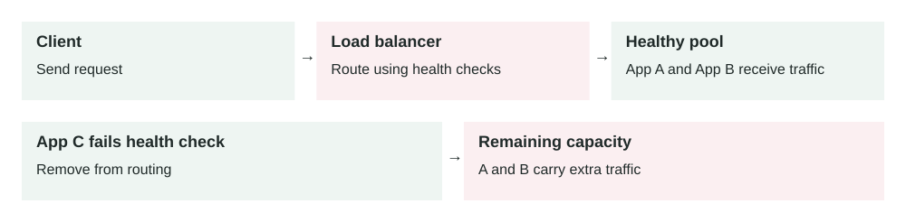
Health checks change which servers are eligible for traffic. Removing a failed server protects requests only if the remaining servers have enough capacity.
A load balancer receives client requests and sends each request to one of several healthy backend servers.
The problem it solves
When an application runs on one server, that server can become overloaded or fail completely. After you add more servers with horizontal scaling, clients need one stable place to send traffic. A load balancer gives clients one endpoint while spreading work across many servers.
Clients → DNS → Load balancer → Healthy app servers → Database / cache
How it works
- A client calls one public hostname, such as api.example.com.
- DNS points that hostname to the load balancer.
- The load balancer accepts the connection or HTTP request.
- It checks its list of healthy backend servers.
- It chooses a backend using a routing rule or balancing algorithm.
- The backend handles the request and returns the response.
The client usually does not know which server handled the request. This is useful because servers can be added, removed, deployed, or replaced without changing the client.
Main components
- Listener: the port and protocol the load balancer accepts, such as HTTPS on port 443.
- Backend pool: the servers, containers, or IP targets that can receive traffic.
- Health check: a repeated test that decides whether a backend should receive traffic.
- Routing rule: logic that sends traffic by host, path, header, port, or service.
- Algorithm: the method used to choose a backend, such as round robin or least connections.
- TLS termination: the load balancer decrypts HTTPS before sending traffic to backends.
Example 1: web API with four servers
A simple order API runs on four identical app servers. The load balancer receives 800 requests per second and sends roughly 200 requests per second to each server. If the team deploys a new version, it can remove one server from rotation, update it, run health checks, and then put it back.
This only works cleanly if the app servers are mostly stateless. User sessions, carts, and temporary data should live in a shared store such as Redis or a database, not only in one server's memory.
Example 2: production failure during peak traffic
An e-commerce checkout service runs across six containers in three availability zones. During a sale, traffic reaches 3,000 requests per second. One container starts returning HTTP 500 errors because it lost its database connection.
The load balancer health check calls /health every 10 seconds. After two failed checks, the bad container is marked unhealthy and receives no new requests. Existing requests may still fail, but the blast radius is limited. The remaining five containers continue serving traffic while the orchestrator replaces the broken container.
When to use it
- You have multiple app servers, containers, or service instances.
- You need one stable public endpoint for a service.
- You want to remove unhealthy instances automatically.
- You want rolling deployments without sending users to broken versions.
- You need traffic routing by path, hostname, region, or service.
When not to use it
- A small internal tool runs fine on one machine and downtime is acceptable.
- The backend is not safe to run on multiple instances.
- The real bottleneck is the database, a lock, or a slow third-party API.
- You need global disaster recovery; one regional load balancer is not enough.
Implementation considerations
- Make app servers stateless or move session state to a shared store.
- Use health checks that prove real readiness, not only process existence.
- Set timeouts lower than client timeouts so failures return quickly.
- Enable connection draining before removing a backend during deploys.
- Pass request IDs and original client IP headers to preserve observability.
- Test behavior when one backend, one zone, or one dependency fails.
Security considerations
- Terminate TLS at the load balancer or re-encrypt traffic to private backends.
- Keep backend servers private; only the load balancer should reach them directly.
- Attach WAF, rate limiting, and DDoS protection at the public edge when needed.
- Restrict admin and health-check endpoints so they do not expose sensitive data.
- Validate forwarded headers; do not blindly trust client-supplied IP headers.
Reliability concerns
- Run the load balancer across multiple availability zones when possible.
- Keep enough spare backend capacity to survive one instance or zone failure.
- Use slow-start or warm-up so new instances do not receive full load immediately.
- Monitor unhealthy target count, target latency, 4xx/5xx rates, and rejected connections.
- Decide what happens if all backends are unhealthy: fail closed, serve maintenance, or route to fallback.
Load balancing improves throughput by using many servers, but it adds one network hop. Usually that cost is small compared with the reliability gain. Managed load balancers also add direct cost based on time, traffic, rules, or capacity units. The bigger cost risk is over-scaling backends because health checks or routing rules hide an inefficient application.
Key trade-offs
- Simplicity vs resilience: one server is simpler, but multiple servers behind a load balancer survive failures better.
- Stateless design vs convenience: shared session storage is more work, but it avoids users being tied to one server.
- Strict health checks vs false failures: deep checks catch real issues, but can remove healthy servers if dependencies briefly fail.
- TLS termination vs end-to-end encryption: terminating TLS simplifies certificates and inspection, but backends may still need encryption.
Common mistakes and edge cases
- Using a health check that returns OK even when the app cannot reach the database.
- Using sticky sessions to hide unsafe stateful server design.
- Forgetting connection draining, causing user requests to fail during deploys.
- Setting timeouts too high, which keeps broken requests open and wastes capacity.
- Ignoring uneven traffic when some requests are much slower than others.
- Allowing direct public access to backend servers, bypassing the load balancer.
- Not planning for all targets becoming unhealthy at the same time.
Connection to previous lessons
Horizontal scaling creates the need for load balancing. Vertical scaling can buy time before adding more servers, but it does not remove the single server failure risk. Cache-aside can reduce backend pressure so the load balancer and app servers handle fewer expensive database reads.
Design exercise
You run an API on three servers behind a load balancer. One server becomes slow but still returns HTTP 200 from /health. p95 latency doubles during peak traffic. What should your health check measure, what timeout values would you review, and how would you deploy a fix without dropping active user requests?
Primary source
Read: AWS: What is Elastic Load Balancing? .
Ask a follow-up question if any part of the design is unclear.
Contents · Markdown edition
Lesson 0005 · Asynchronous Systems
Message Queues
In this lesson
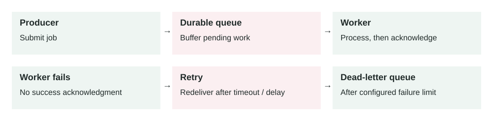
Success removes work from the queue. A failure can lead to redelivery, so processing must tolerate duplicates. The retry path needs limits and an owner for dead-letter messages.
A message queue stores work temporarily so producers and workers do not need to be online, fast, or scaled at exactly the same time.
The problem it solves
Some work should not happen inside the user's request. Sending emails, resizing images, charging retries, report generation, fraud checks, and webhooks can be slow or unreliable. If the API waits for all of that work, users see slow responses and failures spread across the system.
A queue creates a buffer. The API records the work as a message, returns quickly, and background workers process the message later.
API / producer → Queue → Worker pool → Database / external service
How it works
- A producer creates a message that describes work to do.
- The queue stores the message durably.
- A worker receives the message when it has capacity.
- The worker processes the job.
- If processing succeeds, the worker acknowledges or deletes the message.
- If processing fails, the message becomes available again or moves to a dead-letter queue.
The key idea is decoupling. Producers care about submitting work. Workers care about completing work. The queue sits between them and absorbs spikes, retries, and temporary failures.
Main components
- Producer: the service that sends work to the queue.
- Message: a small payload with the task type, IDs, metadata, and retry context.
- Queue: the durable buffer that stores messages until workers are ready.
- Consumer / worker: the process that receives and handles messages.
- Visibility timeout: the time a message is hidden while one worker processes it.
- Dead-letter queue: a separate queue for messages that fail too many times.
Example 1: image processing
A marketplace lets sellers upload product images. The upload API stores the original file, sends an ImageUploaded message, and returns success to the seller. Workers later create thumbnails, compress the image, scan it, and update the product record.
Without a queue, upload requests would wait for CPU-heavy image processing. With a queue, sellers get a fast response and workers can scale separately when many sellers upload at the same time.
Example 2: production spike and external failure
A SaaS billing system receives 50,000 invoice events in 10 minutes at the end of the month. Each invoice must call a payment provider and send an email. The payment provider starts timing out for 20% of requests.
The API writes invoice messages to a queue and returns quickly. Workers process 300 messages per second under normal conditions. When the provider is slow, the queue depth grows, but the API stays healthy. Failed messages retry with delay. After five failures, a message moves to a dead-letter queue so engineers can inspect it without blocking all other invoices.
When to use it
- Work can happen after the user gets a response.
- Traffic arrives in bursts but processing capacity is limited.
- An external dependency is slow, rate-limited, or temporarily unreliable.
- You need retries without making the original request wait.
- Different services need a stable handoff point.
When not to use it
- The user needs the final result immediately before continuing.
- The task must be strongly consistent with the request transaction.
- The team has no monitoring or ownership for failed background jobs.
- Ordering is strict and the queue design does not guarantee the order you need.
- The work is tiny and synchronous processing is simpler and reliable enough.
Implementation considerations
- Keep messages small; store large files in object storage and send a pointer.
- Make workers idempotent because a message may be delivered more than once.
- Choose retry limits, backoff, and dead-letter queue behavior deliberately.
- Set visibility timeout longer than normal processing time, but not extremely long.
- Track queue depth, oldest message age, processing rate, failure rate, and DLQ count.
- Use a stable message schema and version it when producers and consumers change.
Security considerations
- Encrypt queue data at rest and in transit.
- Give producers only permission to send messages and workers only permission to consume.
- Do not put passwords, API keys, or raw sensitive data in message bodies.
- Validate message payloads; never trust queue input just because it is internal.
- Protect dead-letter queues because failed messages may contain production context.
Reliability concerns
- Plan for duplicate messages with idempotency keys or processed-event records.
- Plan for poison messages that fail every retry and fill the queue.
- Use alarms on oldest message age, not only queue size.
- Apply backpressure when producers create work faster than workers can finish it.
- Have a safe replay process for messages in the dead-letter queue.
Queues improve user-facing latency because the API stops waiting for slow work. They also smooth traffic spikes, so worker capacity can be sized for sustained throughput instead of the highest instant spike. The cost is extra infrastructure, more monitoring, and possible delayed completion. If workers fall behind for too long, the system is not failing loudly, but users may still experience stale data or missing side effects.
Key trade-offs
- Fast response vs delayed result: the request returns quickly, but the work finishes later.
- Loose coupling vs debugging complexity: services fail less together, but traces cross async boundaries.
- Retries vs duplicates: retrying improves reliability, but workers must handle repeated messages safely.
- Buffering vs hidden backlog: queues absorb spikes, but a growing queue can hide a capacity problem.
Common mistakes and edge cases
- Putting business-critical work in a queue without alerts for failed jobs.
- Assuming queues guarantee exactly-once processing in all conditions.
- Using message order as a hidden dependency when multiple workers run in parallel.
- Retrying immediately and overwhelming an already failing dependency.
- Making messages too large or tightly coupled to one database schema.
- Forgetting that background work still needs authorization and audit logs.
Connection to previous lessons
Load balancing spreads live request traffic across healthy servers. Queues spread background work across workers and protect the request path from slow tasks. Horizontal scaling also applies to workers: add more consumers when the queue is growing. Cache-aside reduces repeated reads, while queues reduce synchronous work.
Design exercise
A signup API sends welcome emails, creates a CRM record, and calls a fraud service. Today the API takes 4 seconds and fails whenever the CRM is down. Which parts would you move to a queue, what would the message contain, how would you make retries safe, and what alerts would prove the queue is healthy?
Primary source
Read: AWS: What is Amazon Simple Queue Service? . For failed-message handling, also review AWS: Using dead-letter queues in Amazon SQS .
Ask a follow-up question if any part of the design is unclear.
Contents · Markdown edition
Lesson 0006 · Databases
Zero-Downtime Database Migrations
In this lesson
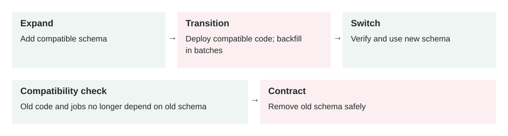
Schema removal comes last. The compatibility window lets old and new application versions coexist while the backfill runs. Verify the cutover before deleting old data.
A zero-downtime migration changes a production database in small compatible steps so old code, new code, and live traffic can safely overlap.
The problem it solves
Database schema changes can break running applications. If you rename a column while old app servers still read the old name, requests fail. If you add a slow index on a large table, writes may block. If you backfill millions of rows in one transaction, the database can become overloaded.
Zero-downtime migration design prevents one release from assuming the entire system changes at the same instant. In real production, old app instances, new app instances, background jobs, and database migrations may all overlap.
Expand schema → Deploy compatible code → Backfill safely → Switch reads/writes → Contract old schema
How it works
- Expand: add the new table, column, index, or nullable field without removing the old path.
- Dual support: deploy code that can work with both old and new schema shapes.
- Backfill: copy or calculate existing data in small batches.
- Switch: move reads and writes to the new schema after data is ready.
- Contract: remove the old column, table, or code only after it is no longer used.
This is often called the expand-and-contract pattern. It turns one risky migration into several safe releases. The cost is more steps, but each step is reversible or easier to pause.
Main components
- Schema migration: the database change, such as adding a column or index.
- Application compatibility: code that supports both old and new schema versions.
- Backfill job: a controlled process that updates old rows in batches.
- Feature flag: a switch that lets you move traffic gradually to the new path.
- Rollback plan: the exact action to stop, pause, or reverse a bad migration.
- Observability: metrics, logs, and checks that prove the migration is safe.
Example 1: adding a user display name
A social app wants to add display_name to the users table. A safe first step is to add the nullable column. Then the application writes both name and display_name for new updates. A batch job fills display_name for existing users. After the team verifies that every active row has the new value, reads switch to the new column. The old column is removed in a later release.
The important part is compatibility. During deployment, some servers may still use the old column and some may use the new code. Both must work.
Example 2: production migration on a large table
An orders table has 400 million rows and receives 6,000 writes per second during peak traffic. The team needs to add an index for faster customer order history queries. A normal blocking index build could slow writes or lock the table long enough to cause an incident.
The production-safe approach is to use the database's online or concurrent index creation mode, run it during a low-risk period, and monitor replication lag, write latency, CPU, disk I/O, and lock waits. If pressure rises above the rollback threshold, the team cancels or pauses the operation. The query path is enabled only after the index is valid and performance is measured.
When to use it
- Your application has real users and cannot pause for schema changes.
- Multiple app versions may run at the same time during deploys.
- The table is large enough that backfills, indexes, or constraints may take time.
- You are renaming, dropping, moving, or changing the meaning of data.
- You need a safe rollback if the new code or data path fails.
When not to use it
- A tiny internal app can accept a clear maintenance window.
- The database is disposable or can be recreated from source data.
- The change is purely additive and has no performance or compatibility risk.
- The extra release steps create more risk than a planned short downtime.
Implementation considerations
- Prefer additive changes first: add before rename, remove, or make required.
- Make new columns nullable first, then enforce
NOT NULL after backfill and validation.
- Backfill in small batches with sleeps or rate limits between batches.
- Use online index creation when your database supports it.
- Keep old and new code paths compatible across at least one deploy window.
- Check background workers and queued jobs; they may run old code after the web deploy.
- Write migration scripts so they can be safely retried after partial failure.
Security considerations
- Do not expose sensitive copied data through a new column before permissions are updated.
- Preserve encryption, masking, retention, and audit rules when moving data.
- Limit who can run production migrations, especially destructive changes.
- Avoid logging raw row values while debugging migration failures.
- Test rollback without restoring production data into unsafe environments.
Reliability concerns
- Define stop conditions before starting: max lock time, lag, error rate, or latency.
- Monitor old and new code paths until the old path is fully removed.
- Protect the database from aggressive backfills that compete with user traffic.
- Plan for partial progress; a migration may succeed for 60% of rows and then fail.
- Keep backups, but do not treat restore-from-backup as your normal rollback plan.
Safe migrations often take longer because they use batching, online operations, and multiple releases. That is usually better than causing downtime. The cost is extra engineering effort, temporary duplicate writes, storage for old and new columns, and monitoring time. The performance risk is database pressure: locks, replication lag, large transactions, slow indexes, and cache churn.
Key trade-offs
- Speed vs safety: one big migration is faster to write, but harder to recover from.
- Simplicity vs compatibility: supporting old and new schema shapes adds temporary code.
- Immediate cleanup vs rollback: deleting old columns quickly reduces clutter but removes fallback options.
- Strong constraints vs rollout flexibility: constraints protect data but should be added after data is ready.
Common mistakes and edge cases
- Renaming or dropping a column in the same release where code stops using it.
- Adding a required column without a safe default or backfill plan.
- Running a large backfill in one transaction.
- Forgetting that background workers, cron jobs, and old containers may still use the old schema.
- Using rollback code that assumes the migration fully completed.
- Adding an index safely but enabling a query before the index is ready.
- Testing only on a tiny local database where lock and backfill behavior is unrealistic.
Connection to previous lessons
Message queues are often used for safe backfills because workers can process rows gradually. Load balancing means old and new app servers may run at the same time, so migrations must support mixed versions. Cache-aside can hide database load, but cached data may also need invalidation when the schema or data shape changes.
Design exercise
You need to rename users.full_name to users.display_name on a table with 80 million rows and continuous traffic. Design the releases: what do you add first, when do you dual-write, how do you backfill, when do you switch reads, and what metrics decide whether to pause or roll back?
Primary source
Read: GitLab Docs: Avoiding downtime in migrations .
Ask a follow-up question if any part of the design is unclear.
Contents · Markdown edition
Lesson 0007 · Databases
Database Indexes
In this lesson

An index can reduce how much data a query reads. The planner may still prefer a scan; some queries can use index-only scans. Writes also need to maintain the index.
A database index is a separate data structure that helps the database find matching rows faster without scanning the whole table.
The problem it solves
As tables grow, simple queries can become slow. A query that was fast on 10,000 rows may become painful on 100 million rows. Without a useful index, the database may need to check many rows to find a small result set.
Indexes solve lookup problems. They help queries filter, join, sort, and enforce uniqueness efficiently. But they are not free: every index takes storage and must be updated when rows are inserted, updated, or deleted.
Query → Planner chooses index → Index lookup → Matching row IDs → Table rows → Result
How it works
- You create an index on one or more columns used by important queries.
- The database keeps a sorted or searchable structure beside the table.
- When a query runs, the query planner estimates whether the index is useful.
- If useful, the database reads a smaller part of the index instead of scanning the full table.
- The database fetches matching rows and returns the result.
The planner can still ignore an index. For example, if a query returns most of the table, scanning the table may be cheaper than jumping through the index and then reading many table pages anyway.
Main components
- Indexed columns: the fields used for filtering, joining, sorting, or uniqueness.
- Index type: the structure, such as B-tree, hash, GIN, GiST, or BRIN.
- Query planner: the database component that decides whether to use the index.
- Selectivity: how much the index narrows the result set.
- Statistics: database metadata that helps the planner estimate cost.
- Maintenance cost: extra work on writes because the index must stay updated.
Example 1: finding a user's orders
An orders table has 20 million rows. The app often runs: WHERE user_id = ? ORDER BY created_at DESC LIMIT 20. Without a helpful index, the database may scan many orders, filter by user, sort them, and return the latest 20.
A compound index on (user_id, created_at DESC) matches the query shape. The database can jump to that user's orders in the correct order and stop after 20 rows. This is usually much faster than scanning and sorting.
Example 2: production incident from missing index
A support dashboard filters tickets by account_id and status = 'open'. At launch, each account has a few hundred tickets. Six months later, enterprise accounts have millions. During business hours, dashboard traffic reaches 1,200 requests per minute and the query starts doing repeated full table scans.
CPU rises to 95%, read I/O spikes, and unrelated APIs slow down because they share the same database. The fix is not just "add an index quickly." The team creates an index safely, ideally using an online or concurrent method, verifies the query plan, and adds monitoring for slow queries. A partial index on open tickets may be better than indexing every historical closed ticket.
When to use it
- A frequent query filters by a column and returns a small part of the table.
- A query needs sorted results quickly, especially with
LIMIT.
- A join repeatedly uses the same foreign key or lookup column.
- You need to enforce uniqueness, such as one email per user.
- A production slow-query log shows the same expensive query pattern repeatedly.
When not to use it
- The table is tiny and scans are already cheap.
- The query returns a large percentage of the table.
- The column has very low selectivity, such as a boolean used alone.
- The table is write-heavy and the index is rarely used.
- You are guessing without checking query plans or real workload data.
Implementation considerations
- Design indexes around real query shapes, not individual columns in isolation.
- Use
EXPLAIN or your database's query plan tool before and after changes.
- Keep column order intentional in compound indexes; equality filters often come before range and sort columns.
- Consider partial indexes for common filtered subsets, such as active or unprocessed rows.
- Remove unused duplicate indexes after proving they are not needed.
- Create large production indexes with a zero-downtime migration approach.
Security considerations
- Indexes may duplicate sensitive values, so database encryption and access controls still matter.
- Unique indexes can reveal data existence through error messages if the app exposes them poorly.
- Expression indexes on normalized data, such as lowercased emails, should follow the same privacy rules as source columns.
- Slow unindexed queries can become a denial-of-service risk if attackers can trigger expensive filters.
- Do not give application users direct access to index metadata if it reveals sensitive schema details.
Reliability concerns
- Creating an index on a large table can consume CPU, I/O, locks, and replication bandwidth.
- Bad indexes can make writes slower and increase database recovery time.
- Stale statistics can cause the planner to choose the wrong plan.
- Adding many indexes can hide query problems until write throughput collapses.
- Index bloat may grow over time and require maintenance depending on the database.
A good index can turn a slow query into a fast lookup. It can reduce CPU, disk reads, memory pressure, and response time. The cost is storage, slower writes, more backup size, more replication work, and more operational care. Indexes are performance tools, but they are also capacity and cost decisions.
Key trade-offs
- Read speed vs write speed: indexes make reads faster but inserts and updates heavier.
- Specificity vs flexibility: a targeted compound index is fast for one query shape but may not help others.
- Storage cost vs latency: more indexes use more disk but can reduce expensive scans.
- Fast fix vs safe rollout: adding an index may fix latency, but production creation still needs migration discipline.
Common mistakes and edge cases
- Creating one index per column without matching the actual query.
- Expecting an index to help when the query returns most rows.
- Putting compound index columns in the wrong order.
- Indexing a column but wrapping it in a function that prevents normal index use.
- Forgetting that indexes must be maintained during every write.
- Adding an index locally on tiny data and assuming production behavior will match.
- Not checking whether an old index became unused after the product changed.
Connection to previous lessons
Zero-downtime migrations matter because large indexes must be added safely. Cache-aside can reduce repeated database reads, but a cache should not hide permanently bad query design. Vertical scaling may buy time for a slow database, but the correct index can remove the real bottleneck. Message queues can help process index-related backfills or cleanup work gradually.
Design exercise
A table events has 200 million rows. The main query is WHERE account_id = ? AND event_type = ? AND created_at > ? ORDER BY created_at DESC LIMIT 100. What index would you try first, how would you verify the query plan, and what production metrics would you watch while creating the index?
Primary source
Read: PostgreSQL Docs: Indexes .
Ask a follow-up question if any part of the design is unclear.
Contents · Markdown edition
Lesson 0008 · Consistency
Eventual Consistency
In this lesson
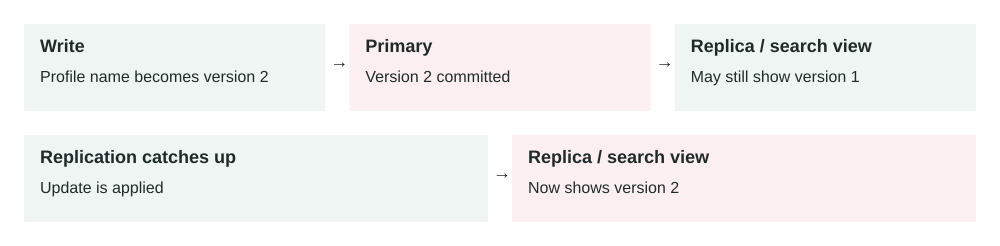
Different readers can temporarily see different versions. Convergence depends on updates reaching and being applied by the replica or derived view. A lagging permission view can create a security risk.
Eventual consistency means different copies of data may disagree briefly, but they should converge to the same value after writes stop and replication finishes.
The problem it solves
Distributed systems often keep data in more than one place: replicas, caches, search indexes, queues, analytics stores, or different regions. Updating every copy immediately can be slow, expensive, or unavailable when part of the system is down.
Eventual consistency accepts temporary staleness so the system can stay fast and available. The trade-off is that users or services may briefly read old data after a successful write.
Write accepted → Primary data updated → Replication / async update → Other readers catch up
How it works
- A service accepts a write and stores it in the primary system.
- The system sends updates to replicas, caches, indexes, or other regions.
- Some reads may hit a copy that has not received the update yet.
- Background replication continues until copies catch up.
- After enough time, later reads return the new value from all healthy copies.
Eventual consistency is not the same as random inconsistency. A production system still needs clear rules: how long staleness is acceptable, how conflicts are resolved, how retries work, and which operations require stronger guarantees.
Main components
- Primary write path: the place where the write is accepted first.
- Replicas or derived stores: copies such as read replicas, caches, search indexes, or regional tables.
- Replication mechanism: the process that moves changes from one place to another.
- Lag: the delay between the accepted write and all readers seeing it.
- Conflict resolution: the rule used when two updates disagree.
- Read policy: the decision of when stale reads are acceptable and when strong reads are required.
Example 1: profile update and search
A user updates their profile name from "Hamza K." to "Hamza Khan." The main user table updates immediately. A background job later updates the search index used by people search.
For a short time, the profile page may show the new name while search results still show the old name. That is usually acceptable if search catches up quickly. It would not be acceptable if the old value contained sensitive data that must disappear immediately.
Example 2: production multi-region reads
A global e-commerce app runs in the US, Europe, and Asia. Users can update shipping addresses. Writes are accepted in the nearest region and replicated to other regions, usually within one second. During a regional network issue, replication lag grows to 45 seconds.
Product browsing and recommendation reads can tolerate stale data, so they keep using local replicas. Checkout cannot risk shipping to an old address, so it reads from a stronger source or asks the user to confirm the address. The design uses eventual consistency for speed, but switches to stronger consistency for business-critical decisions.
When to use it
- Reads need to be fast and highly available across replicas or regions.
- Temporary stale data is acceptable for the user experience.
- The data is derived, such as search results, feeds, counters, recommendations, or analytics.
- The system needs to keep working during partial network or replica failures.
- You can explain and measure the allowed staleness window.
When not to use it
- Money movement, inventory reservation, permissions, or safety decisions require the latest value.
- A stale read can leak private data or violate compliance rules.
- The user expects read-your-writes behavior immediately after editing something.
- Conflicts cannot be resolved safely or automatically.
- The team has no visibility into replication lag or failed updates.
Implementation considerations
- Classify operations: which can be stale, which need read-your-writes, and which need strong consistency.
- Expose clear UI states, such as "processing" or "syncing", when users may see delayed results.
- Use version numbers, timestamps, or event IDs to detect old updates arriving late.
- Make update handlers idempotent so duplicate replication events do not corrupt data.
- Measure replication lag and alert when it exceeds the business tolerance.
- Use stronger reads for critical paths instead of forcing every read to be strong.
Security considerations
- Do not serve stale authorization or permission data for sensitive operations.
- When deleting private data, make sure caches, indexes, logs, and replicas are also cleaned up.
- Avoid exposing old personal data in search indexes after a user updates or removes it.
- Protect replication channels because they carry production changes across systems.
- Audit conflict resolution rules when they affect money, access, or compliance data.
Reliability concerns
- Replication can pause, fall behind, or replay events out of order.
- Retries can create duplicate events unless consumers are idempotent.
- Conflicting writes from different regions may need deterministic resolution.
- Derived stores can drift silently unless you run reconciliation checks.
- Failover can expose older data if the replacement replica is behind.
Eventual consistency can reduce latency because reads can use nearby replicas, caches, or indexes. It can also reduce cost because not every read needs the strongest and most expensive path. The cost is design complexity: monitoring lag, handling conflicts, explaining stale UI states, and deciding which paths need stronger guarantees.
Key trade-offs
- Speed vs freshness: local or cached reads are faster but may return old data.
- Availability vs strict correctness: the system can keep serving during partial failures, but some reads may lag.
- Lower cost vs more logic: weaker reads can cost less, but the application must handle stale values.
- Async updates vs simpler reasoning: background propagation scales well, but debugging becomes harder.
Common mistakes and edge cases
- Saying "eventual consistency" without defining how much delay is acceptable.
- Using stale permission data for authorization decisions.
- Assuming users will not notice after they update data and immediately read it back.
- Letting cache, search, and database copies drift with no reconciliation job.
- Resolving conflicts by timestamp without thinking about clock skew or business meaning.
- Retrying failed replication forever without a dead-letter path or alert.
- Using eventual consistency for inventory or balance checks that need strict correctness.
Connection to previous lessons
Cache-aside is often eventually consistent because cached values can be stale. Message queues create async workflows where side effects finish later. Zero-downtime migrations may temporarily support old and new data shapes at the same time. Database indexes and search indexes can also lag or require safe rebuilds in production.
Design exercise
You are designing a shopping cart used across mobile and web. Item additions must feel instant, but checkout must never charge for the wrong quantity. Which reads can be eventually consistent, which reads must be strong, how would you handle conflicts, and what lag metric would you alert on?
Primary source
Read: AWS DynamoDB Docs: Read consistency .
Ask a follow-up question if any part of the design is unclear.
Contents · Markdown edition
Lesson 0009 · Deployment
Containerization
In this lesson
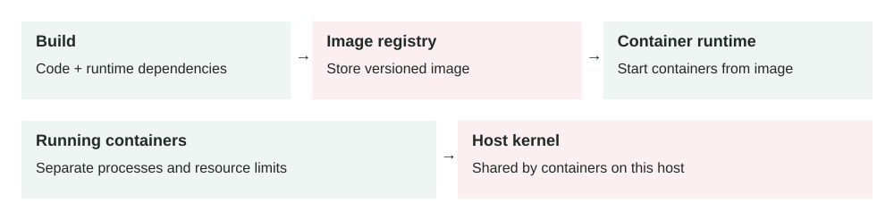
A versioned image travels between environments. Containers provide process isolation while sharing the host kernel; persistent data and secrets need separate handling.
Containerization packages an application with the runtime, libraries, and configuration it needs, then runs it as an isolated process.
The problem it solves
Applications often fail because environments are different. A service may work on a developer laptop but fail in staging because Node, Python, system packages, environment variables, or OS libraries are different.
Containers reduce this drift. The team builds one image and runs that same image in local development, CI, staging, and production. This makes deploys more repeatable and scaling more predictable.
Source code → Container image → Registry → Container runtime → Running container
How it works
- Write a container build file that describes the app runtime and files.
- Build an immutable image from the source code and dependencies.
- Push the image to a registry.
- Deploy the image to a server, container platform, or orchestrator.
- The runtime starts one or more isolated containers from the image.
- Traffic reaches the container through a published port or service route.
A container is not a full virtual machine. It usually shares the host kernel but has isolated process, filesystem, network, and resource boundaries. This makes containers lighter than VMs, while still giving useful separation.
Main components
- Image: a versioned package containing the app and its dependencies.
- Container: a running process created from an image.
- Containerfile / Dockerfile: the recipe used to build the image.
- Registry: a place to store and pull images, such as Docker Hub or a private registry.
- Runtime: the engine that starts, stops, and isolates containers.
- Orchestrator: a system, such as Kubernetes or ECS, that schedules and replaces containers at scale.
Example 1: consistent API deployments
A Node.js API needs Node 22, a specific image library, and a few system packages. Without containers, every server must be configured correctly by scripts or manual setup. One missing library can break production.
With containers, the team builds one API image. CI tests that image, staging runs that image, and production deploys that same image tag. If a rollback is needed, the platform starts the previous image tag instead of rebuilding the server by hand.
Example 2: production scaling and failed container
A payment worker runs as 20 containers across five machines. Each container processes messages from a queue. During peak load, the queue grows from 5,000 to 80,000 messages, so the platform scales the worker to 80 containers.
One machine runs out of memory and kills several containers. The orchestrator detects failed containers, starts replacements on healthier machines, and the queue continues draining. The container image made scaling simple, but the system still needed memory limits, health checks, logs, metrics, and safe retry behavior.
When to use it
- You want the same app package across local, CI, staging, and production.
- You run many services with different runtimes or dependencies.
- You need fast horizontal scaling and repeatable rollbacks.
- You deploy background workers, APIs, scheduled jobs, or event consumers.
- You want infrastructure to schedule services based on CPU and memory limits.
When not to use it
- A very small app is already simple to deploy and does not need environment isolation.
- The team cannot operate the container platform safely.
- The workload needs direct host access that containers would complicate.
- You are using containers to hide poor configuration, weak tests, or missing observability.
- The application stores important state only inside the container filesystem.
Implementation considerations
- Keep images small and deterministic; install only what the app needs.
- Use explicit image tags or digests instead of deploying a moving
latest tag.
- Pass configuration through environment variables or secrets, not baked into images.
- Run one main process per container unless there is a clear reason not to.
- Write logs to stdout or stderr so the platform can collect them.
- Set CPU and memory requests or limits so one container cannot starve the host.
- Make containers stateless; store durable data in databases, queues, object storage, or volumes.
Security considerations
- Use trusted base images and scan images for known vulnerabilities.
- Do not run containers as root unless the workload truly requires it.
- Keep secrets out of images, build logs, and image layers.
- Drop unnecessary Linux capabilities and keep the filesystem read-only where possible.
- Patch base images regularly; rebuilding the app is not enough if the base is old.
- Restrict who can push production images to the registry.
Reliability concerns
- Define readiness checks so traffic only reaches containers that are actually ready.
- Define liveness checks carefully; bad checks can restart healthy containers.
- Gracefully handle shutdown so in-flight requests or queue messages are not lost.
- Use immutable image tags so rollbacks are predictable.
- Monitor restart count, memory usage, CPU throttling, image pull failures, and startup time.
- Keep startup fast enough that scaling and recovery are useful during incidents.
Containers are usually lighter than virtual machines because they share the host kernel. That can improve resource utilization and reduce cost. The cost is operational complexity: image builds, registries, security scanning, orchestration, networking, and monitoring. Poorly sized containers can also waste money or cause noisy-neighbor problems on shared hosts.
Key trade-offs
- Portability vs platform knowledge: containers package the app well, but production still depends on networking, storage, and orchestration.
- Fast scaling vs stateless design: containers can scale quickly only when state is externalized.
- Isolation vs shared kernel risk: containers isolate processes but are not the same security boundary as separate VMs.
- Small images vs build convenience: smaller images are faster and safer, but may require cleaner build steps.
Common mistakes and edge cases
- Putting secrets into the image or Dockerfile.
- Using
latest in production and losing rollback clarity.
- Writing uploaded files or important state inside the container filesystem.
- Running as root by default and giving containers unnecessary privileges.
- Not setting memory limits, then being surprised by host-level failures.
- Ignoring graceful shutdown, causing duplicate queue work or dropped requests.
- Assuming containers alone provide high availability without load balancing and orchestration.
Connection to previous lessons
Horizontal scaling often means running more containers. Load balancing routes traffic to healthy containers. Message queues let worker containers scale separately from APIs. Zero-downtime migrations matter because old and new container versions can overlap during deploys. Eventual consistency shows why containerized services must tolerate delayed side effects.
Design exercise
You are containerizing an API and a background worker. What should go into the image, what should stay outside as configuration or secrets, what health checks would you add, and how would you roll back if the new image starts failing after 10% of traffic is deployed?
Primary source
Read: Docker Docs: What is a container? .
Ask a follow-up question if any part of the design is unclear.
Contents · Markdown edition
Lesson 0010 · API Optimization
In this lesson
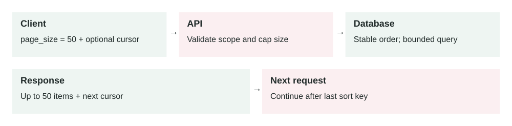
Each request reads a bounded page. A stable sort key needs a tie-breaker, such as an ID. A cursor does not bypass authorization or automatically guarantee a snapshot across pages.
Pagination splits a large list response into smaller pages so APIs stay fast, predictable, and safer under real production load.
The problem it solves
List endpoints are dangerous when they are unbounded. An endpoint like GET /orders may be fine with 500 rows, but painful with 50 million rows. A single request can consume too much database time, memory, network bandwidth, and client processing.
Pagination forces the API to return a controlled number of items. The client asks for the next page only when it needs more data.
Client requests page → API validates page size → Database fetches bounded rows → API returns items + next page token
How it works
- The client calls a list endpoint with a requested page size.
- The API applies a maximum page size to protect the system.
- The database fetches one bounded slice of results.
- The API returns the items and a cursor or page token for the next page.
- The client sends that token to continue from the previous position.
- The API stops returning a next token when there are no more results.
Good pagination is not only a UI feature. It is a system protection mechanism. It keeps each request small enough to measure, retry, cache, rate limit, and debug.
Main components
- Page size: the number of items requested, with a server-side maximum.
- Cursor or page token: an opaque value that tells the API where to continue.
- Stable ordering: a predictable sort order so items are not skipped or duplicated.
- Index: a database index that supports the filter and order used by the list endpoint.
- Response metadata: data such as
next_page_token, count hints, or links.
- Rate limits: protection against clients crawling too aggressively.
Offset pagination uses limit and offset, such as ?limit=50&offset=1000. It is simple, but it gets slower on deep pages because the database may still need to walk past many skipped rows. It can also duplicate or skip items when rows are inserted or deleted while the user is paging.
Cursor pagination uses a stable position, such as the last seen created_at and id, wrapped in an opaque token. It is usually better for large, changing datasets because it continues from a known item instead of counting skipped rows.
Example 1: order history API
A customer opens their order history. The app calls GET /orders?page_size=25. The API returns the latest 25 orders and a next_page_token. The mobile app only fetches more if the customer scrolls.
The database uses an index like (customer_id, created_at DESC, id DESC). This matches the filter and ordering. The API avoids loading years of history when the user only wants the first screen.
Example 2: production export incident
A reporting endpoint returns all events for an account. One enterprise account has 90 million events. At 9:00 AM, three customers start exports at the same time. Each request tries to return every matching row. Database CPU reaches 98%, memory pressure rises, API containers time out, and unrelated dashboards become slow.
The fix is to make the endpoint paginated and move full exports to an async job. Interactive APIs return small pages. Large exports create a background task, stream data in chunks, store the file in object storage, and notify the user when it is ready. Pagination protects the request path; queues handle the long-running export.
When to use it
- An endpoint returns a list that can grow over time.
- Clients display scrollable or table-based data.
- The query reads from a large table, search index, or external API.
- You need predictable latency and memory usage per request.
- You want APIs that remain safe as customers grow from small to large accounts.
When not to use it
- The response is always tiny and bounded by business rules.
- The client truly needs a complete export; use an async export flow instead.
- The endpoint returns a single aggregate value, not a list of items.
- The data is static and small enough to cache as one object safely.
Implementation considerations
- Always enforce a server-side maximum page size.
- Use cursor pagination for large or frequently changing datasets.
- Use a stable sort, often by
created_at plus a unique id tie-breaker.
- Make page tokens opaque so clients do not depend on internal database details.
- Validate filters and sort fields; unsupported combinations can create slow queries.
- Avoid expensive total counts on large datasets unless the product truly needs them.
- Align database indexes with the endpoint's filters and order.
Security considerations
- Apply authorization before pagination so users cannot page through data they should not see.
- Sign or encrypt page tokens if they include sensitive internal state.
- Do not expose raw database IDs or query details inside readable tokens when avoidable.
- Rate limit pagination to prevent scraping and expensive full-table crawling.
- Keep filters tenant-scoped so one customer cannot infer another customer's data volume.
Reliability concerns
- Offset pagination can skip or duplicate rows when data changes during traversal.
- Cursor tokens can expire if the underlying sort key disappears or access changes.
- Changing default sort order can break clients that store old tokens.
- Deep pagination can still be expensive if the index does not match the query.
- Clients may retry pages, so reads and billing side effects must be safe.
Pagination reduces API latency, memory usage, database work, response size, and bandwidth. It also lowers failure blast radius because one bad request can only ask for a bounded amount of work. The cost is API complexity: clients must handle tokens, empty pages, retries, ordering, and partial results.
Key trade-offs
- Simplicity vs scale: offset pagination is easy, but cursor pagination scales better on large changing lists.
- Freshness vs stable traversal: live data may change while the client pages through it.
- User convenience vs system safety: "show all" is convenient, but can overload production systems.
- Detailed totals vs fast responses: exact counts can be expensive on large filtered datasets.
Common mistakes and edge cases
- Allowing clients to request unlimited or extremely large page sizes.
- Using offset pagination for very deep pages on huge tables.
- Sorting only by a non-unique field, causing unstable page boundaries.
- Returning exact total counts that require expensive full scans.
- Letting page tokens reveal tenant IDs, raw SQL, or internal schema details.
- Forgetting that deleted or newly inserted rows can change what the next page contains.
- Using pagination as the only solution for exports instead of background jobs.
Connection to previous lessons
Database indexes make paginated queries fast only when the index matches the filter and sort. Message queues are better for full exports that should not block API requests. Load balancing spreads API traffic, but it cannot protect the database from one unbounded query. Containerization makes APIs easier to scale, but pagination reduces the work each container must perform. Eventual consistency matters when paginated data changes while the client is traversing it.
Design exercise
You own GET /events for an analytics product. Some accounts have 500 events; others have 500 million. Design the pagination contract: page size limits, cursor fields, default sort, index shape, token security, and what you would do when a customer asks for a full CSV export.
Primary source
Read: Google API Improvement Proposals: AIP-158 Pagination .
Ask a follow-up question if any part of the design is unclear.
Contents · Markdown edition
Lesson 0011 · Operations
Observability
In this lesson
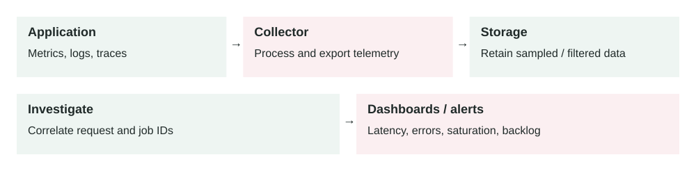
Telemetry connects symptoms to requests and dependencies. Collection itself consumes resources; protect sensitive fields and watch for missing or dropped telemetry.
Observability is the ability to understand what a production system is doing by looking at its external signals: logs, metrics, traces, and events.
The problem it solves
Production systems fail in ways you did not predict. A database index may be missing, a queue may fall behind, a container may restart, or one customer may trigger a slow API path. Without observability, engineers guess.
Observability gives you evidence. It helps answer: what broke, who is affected, when did it start, where is the bottleneck, and whether the fix worked.
Service emits telemetry → Collector / agent → Storage → Dashboards, alerts, traces, logs
How it works
- Application code and infrastructure emit telemetry.
- Telemetry is collected from services, containers, databases, queues, and load balancers.
- The data is enriched with labels such as service, route, region, customer tier, and version.
- Storage systems index the data for search, dashboards, alerting, and trace lookup.
- Engineers use the data to detect incidents, debug root causes, and verify fixes.
Good observability is not only collecting more data. It is collecting the right data with enough context to make production decisions quickly.
Main components
- Metrics: numeric time-series data, such as request rate, latency, error rate, CPU, and queue depth.
- Logs: structured event records that explain what happened inside a service.
- Traces: request journeys across services, useful for seeing where time was spent.
- Events: important changes, such as deployments, config changes, autoscaling, or incident actions.
- Dashboards: visual views of service health and business-critical paths.
- Alerts: notifications based on symptoms that need human or automated action.
Example 1: slow checkout request
A user reports that checkout is slow. Metrics show p95 checkout latency increased from 400 ms to 3 seconds. Logs show no clear application error. A distributed trace shows the payment service is fast, but the inventory service spends 2.4 seconds waiting on a database query.
The team checks the query plan and finds a missing index. The fix is not "add more containers"; the fix is a safe database index migration. Observability prevents the team from scaling the wrong layer.
Example 2: production queue backlog
A billing system uses a queue to send invoices. Normally, workers process 300 messages per second and the oldest message age stays under 2 minutes. After a release, the oldest message age grows to 45 minutes while API traffic still looks healthy.
Metrics show worker error rate increased. Logs show the new code rejects some invoice payloads. Traces show retries hammer the same downstream CRM. The team rolls back the worker image, moves poison messages to a dead-letter queue, and adds a schema compatibility test. Without queue observability, users might only notice hours later when invoices do not arrive.
When to use it
- Every production service needs basic observability before it is trusted.
- You operate APIs, workers, databases, queues, containers, or scheduled jobs.
- You need to debug failures across multiple services.
- You need alerts based on user-visible symptoms, not only machine health.
- You want to measure whether reliability, performance, and cost changes worked.
When not to overdo it
- A small internal script may not need full tracing and dashboards.
- High-cardinality labels can explode cost without improving debugging.
- Verbose logs can hide useful signals and leak sensitive data.
- Too many alerts can train teams to ignore real incidents.
Implementation considerations
- Start with golden signals: latency, traffic, errors, and saturation.
- Use structured logs with request IDs, service name, route, status, and safe business context.
- Propagate trace IDs across services, queues, and background workers.
- Record deployment and config-change events so incidents can be tied to changes.
- Alert on symptoms, such as failed checkout rate, not only CPU or memory.
- Define service-level objectives for critical user journeys.
- Review dashboards during incidents and remove panels nobody uses.
Security considerations
- Do not log passwords, tokens, session cookies, payment data, or raw personal data.
- Restrict access to logs and traces because they may reveal production behavior and customer context.
- Scrub sensitive headers and payloads before telemetry leaves the service.
- Keep audit logs for security-relevant actions separate from noisy debug logs.
- Protect telemetry pipelines; attackers can hide activity by disabling or flooding them.
Reliability concerns
- Telemetry must not take down the app if the collector or vendor is unavailable.
- Use sampling carefully so rare but important traces are not always dropped.
- Monitor the observability pipeline itself: dropped logs, delayed metrics, and collector errors.
- Keep alert thresholds tied to user impact and expected traffic patterns.
- Run incident reviews to add missing signals discovered during real failures.
Observability has real cost. Logs, metrics, and traces consume CPU, network, storage, and vendor budget. The goal is not infinite data. The goal is enough high-quality telemetry to detect and debug production problems quickly. Use sampling, retention rules, label discipline, and aggregation to control cost.
Key trade-offs
- Detail vs cost: more telemetry helps debugging but increases storage and processing cost.
- Sampling vs completeness: sampling reduces cost but can miss rare failures.
- Fast alerts vs noisy alerts: sensitive alerts catch problems quickly but may create fatigue.
- Debug context vs privacy: rich logs help engineers but can expose sensitive data if poorly designed.
Common mistakes and edge cases
- Logging unstructured text that cannot be filtered by service, request ID, or customer segment.
- Alerting on CPU but missing user-facing error rate or latency.
- Using high-cardinality labels, such as user ID, on every metric.
- Forgetting background workers, queues, cron jobs, and migrations.
- Collecting traces but not propagating trace IDs through async boundaries.
- Keeping debug logs forever and creating avoidable cost and privacy risk.
- Not marking deployments, making it harder to connect incidents to recent changes.
Connection to previous lessons
Load balancing needs target health, latency, and error metrics. Message queues need queue depth, oldest message age, retries, and dead-letter queue counts. Containerization needs restart, CPU, memory, and image rollout visibility. API pagination should reduce latency and database load, and observability proves whether it did. Eventual consistency needs lag metrics and reconciliation checks.
Design exercise
You own a checkout API, an inventory service, a payment service, and an invoice queue. Design the minimum observability plan: five metrics, three structured log fields, one trace you must capture, two alerts, and one dashboard that would help you debug a failed checkout incident.
Primary source
Read: OpenTelemetry Docs: Observability primer .
Ask a follow-up question if any part of the design is unclear.
Contents · Markdown edition
Lesson 0012 · Security and Reliability
Rate Limiting
In this lesson
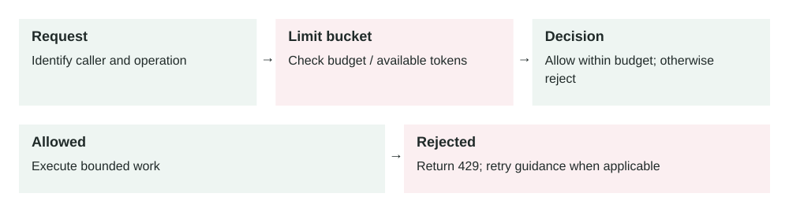
The decision branches into execution or rejection. Limits across many app instances need coordinated accounting when a strict shared budget is required.
Rate limiting controls how many requests or expensive actions a user, client, IP address, tenant, or service can perform in a period of time.
The problem it solves
APIs can be overloaded by mistakes, aggressive clients, crawlers, attacks, or one large customer. Without limits, one caller can consume database CPU, queue capacity, third-party API quota, email or SMS budget, and container resources that other users need.
Rate limiting creates a controlled boundary. It does not make the system infinitely scalable, but it prevents one caller from taking more than their fair share and gives the platform time to recover.
Request → Identify caller → Check limit bucket → Allow or reject → Record decision and metrics
How it works
- The API identifies the caller using API key, user ID, tenant ID, IP address, or service identity.
- The rate limiter checks how much quota that caller has used in a time window.
- If quota remains, the request continues and usage is recorded.
- If quota is exhausted, the API returns a clear rejection, commonly HTTP
429 Too Many Requests.
- The response may include retry guidance such as
Retry-After.
Good rate limiting protects scarce resources, not only request count. A cheap status check and a report export should not consume the same amount of quota.
Main components
- Identity key: who the limit applies to, such as user, tenant, token, IP, or route.
- Limit rule: the allowed volume, such as 100 requests per minute.
- Algorithm: the counting method, such as fixed window, sliding window, token bucket, or leaky bucket.
- Storage: where counters or tokens are kept, often Redis or an API gateway.
- Response behavior: what the caller receives when limited.
- Observability: metrics and logs showing allowed, rejected, and near-limit traffic.
Common algorithms
- Fixed window: simple counters per minute or hour; easy but can allow bursts at window boundaries.
- Sliding window: smoother counting over the last real interval; more accurate but more complex.
- Token bucket: tokens refill over time; supports controlled bursts while preserving average rate.
- Leaky bucket: requests drain at a steady rate; useful when downstream systems need smooth traffic.
Example 1: public login API
A login endpoint is cheap when used normally but dangerous during credential stuffing. The API limits failed login attempts by IP address, username, and device fingerprint. After repeated failures, it slows or blocks attempts and may require extra verification.
This protects user accounts and database capacity. The limit must be careful: a shared office IP or mobile network can represent many real users, so the design should combine multiple signals instead of blocking only by IP.
Example 2: production cost spike from exports
An analytics SaaS product has an export endpoint that starts background CSV jobs. One enterprise customer accidentally runs a script that starts 30,000 exports in an hour. Queue depth grows, object storage writes increase, email notifications spike, and the data warehouse bill jumps.
A better design limits export creation by tenant and by user, uses a separate quota for expensive exports, rejects excess requests with a clear retry time, and exposes current quota in the UI. The system also alerts when one tenant approaches a cost or job-creation threshold.
When to use it
- Any public API, login endpoint, webhook receiver, file upload, or export endpoint.
- Endpoints that call paid third-party services such as SMS, email, maps, or AI APIs.
- Multi-tenant systems where one tenant can affect others.
- Background job creation endpoints that can flood queues.
- Internal service-to-service APIs that need protection from retry storms.
When not to rely on it alone
- Rate limiting does not replace authentication, authorization, or input validation.
- It does not fix slow queries, inefficient code, or missing pagination.
- It does not stop distributed attacks unless limits are applied at the right layer.
- It should not block critical internal recovery actions without a bypass plan.
Implementation considerations
- Limit by the right identity: user, tenant, API key, IP, route, or a combination.
- Use different limits for cheap reads, expensive writes, exports, uploads, and login attempts.
- Return helpful errors with
429, retry timing, and documentation.
- Keep counters in a fast shared store if many app instances enforce the same limit.
- Use fail-open or fail-closed deliberately if the limiter storage is unavailable.
- Add admin controls for temporary quota increases and emergency blocks.
- Test clients to make sure they back off instead of retrying harder.
Security considerations
- Apply strict limits to authentication, password reset, invite, OTP, and token creation endpoints.
- Do not trust headers such as
X-Forwarded-For unless set by your trusted proxy.
- Protect against quota bypass through multiple API keys, accounts, regions, or paths.
- Keep rate-limit decisions auditable for abuse investigation.
- Avoid revealing too much about account existence through different rate-limit messages.
Reliability concerns
- The limiter itself must be fast and highly available.
- A centralized limiter can become a bottleneck if every request depends on it.
- Retry storms can happen when many clients receive errors and retry at the same time.
- Clock drift can affect window-based algorithms across distributed systems.
- Bad limits can block real users during traffic spikes or incidents.
Rate limiting improves system stability by reducing overload before expensive work starts. It can lower database load, queue backlog, storage writes, and third-party service bills. The cost is extra infrastructure, storage lookups, operational tuning, and occasional customer support when legitimate users hit limits.
Key trade-offs
- Protection vs usability: strict limits protect the system but can block legitimate bursts.
- Simplicity vs fairness: IP-based limits are simple but unfair for shared networks and weak against distributed clients.
- Central accuracy vs latency: a shared limiter is more consistent but adds a network dependency.
- Fail-open vs fail-closed: fail-open preserves availability, while fail-closed protects resources during limiter failures.
Common mistakes and edge cases
- Using one global request limit for both cheap and expensive endpoints.
- Forgetting tenant-level limits in a multi-tenant system.
- Letting retries bypass limits and amplify an outage.
- Applying limits after the expensive database query has already run.
- Not telling clients when to retry, causing aggressive retry loops.
- Blocking all users behind a shared NAT or corporate proxy.
- Not monitoring near-limit traffic before users start failing.
Connection to previous lessons
API pagination bounds response size; rate limiting bounds request frequency and expensive actions. Observability shows whether limits are protecting the system or hurting real users. Message queues need job creation limits so producers do not overwhelm workers. Load balancing spreads traffic, but rate limiting decides whether traffic should be accepted at all. Database indexes make queries faster, but limits prevent expensive query abuse.
Design exercise
You run a public API with login, search, file upload, and report export endpoints. Design a rate-limit plan: what identity keys would you use, which endpoints need separate limits, what happens when Redis is down, what response do clients receive, and which metrics prove the limits are working?
Primary source
Read: OWASP API Security: Unrestricted Resource Consumption .
Ask a follow-up question if any part of the design is unclear.
Contents · Markdown edition
Lesson 0013 · Reliability
Circuit Breakers
In this lesson
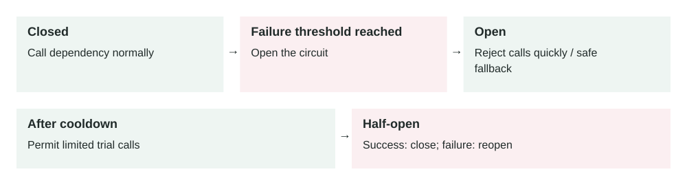
The breaker uses recent failures to change state. Half-open probes test recovery; a fallback must preserve business correctness, especially for payment operations.
A circuit breaker stops calling a dependency that is failing, waits for a recovery period, then carefully tests whether the dependency is healthy again.
The problem it solves
Distributed systems depend on other services: databases, payment providers, search APIs, queues, email providers, and internal microservices. When one dependency becomes slow or fails, callers often retry. Those retries can make the failing dependency even worse and consume all caller resources.
A circuit breaker prevents this cascading failure. After enough failures, it temporarily fails fast instead of sending more traffic to a dependency that probably cannot handle it.
Request → Circuit breaker → Healthy dependency: call it · Failing dependency: fail fast / fallback
How it works
- Closed: calls flow normally while the dependency is healthy.
- Failure tracking: the breaker counts errors, timeouts, or slow responses.
- Open: after a threshold is crossed, calls fail fast without hitting the dependency.
- Cooldown: the breaker waits for a configured recovery period.
- Half-open: a small number of test calls are allowed.
- Recover or reopen: if test calls succeed, the breaker closes; if they fail, it opens again.
The core idea is simple: when a dependency is clearly unhealthy, stop adding pressure. Give it time to recover and protect the rest of your system.
Main components
- Failure threshold: how many failures or what error rate opens the breaker.
- Timeout: how long the caller waits before treating the call as failed.
- Open duration: how long the breaker fails fast before testing recovery.
- Half-open probes: limited test calls used to check if the dependency recovered.
- Fallback: a safe alternate response, cached result, queue, or graceful error.
- Metrics: breaker state, rejected calls, dependency latency, and failure rate.
Example 1: payment provider outage
A checkout service calls a payment provider. Normally the provider responds in 300 ms. During an outage, calls hang for 10 seconds and then fail. Without a circuit breaker, checkout containers fill with waiting requests, users retry, and the whole checkout API becomes slow.
With a circuit breaker, the checkout service opens the breaker after repeated failures. New payment attempts fail fast with a clear temporary error. The app can offer "try again later" or save the order as pending payment. The payment provider gets less traffic while it recovers.
Example 2: production cascading failure
A recommendation service depends on a profile service. At peak traffic, the profile service starts timing out because a database read replica is overloaded. The recommendation service receives 8,000 requests per second and retries each profile call twice. That turns 8,000 failing calls into 24,000 calls per second.
The circuit breaker opens when the profile-service failure rate stays above 50% for one minute. Recommendation responses fall back to popular items instead of personalized items. User experience is degraded, but the site stays up and the profile service has room to recover.
When to use it
- A service calls a remote dependency that can fail or become slow.
- Retries could overload the dependency or caller.
- A fallback response is safer than waiting for a doomed request.
- The dependency is shared by many callers and needs protection.
- You want failures to be contained instead of spreading across the system.
When not to use it
- The operation is local, fast, and not likely to cause cascading failure.
- Failing fast would be worse than waiting, such as a critical one-time admin action.
- You have no safe fallback and the error would be confusing without product handling.
- The real issue is missing timeouts; set timeouts before tuning circuit breakers.
Implementation considerations
- Set short, explicit timeouts for every remote call before adding retries or breakers.
- Track failures by dependency and operation, not only globally by service.
- Use bounded retries with jitter so callers do not retry in synchronized waves.
- Choose fallbacks carefully: cached data, default response, queued work, or clear failure.
- Expose breaker state in metrics and dashboards.
- Make half-open probes small so recovery checks do not create another traffic spike.
- Test dependency failure in staging or controlled production experiments.
Security considerations
- Do not bypass authorization or fraud checks as a fallback unless the business has approved that risk.
- Do not expose internal dependency names, hostnames, or stack details in user-facing errors.
- Be careful with cached fallback data; stale data can leak revoked permissions or old personal data.
- Protect breaker controls because forcing breakers open or closed can affect availability.
- Log enough to investigate incidents, but avoid logging secrets from failed dependency calls.
Reliability concerns
- A breaker threshold that is too sensitive can block healthy traffic during brief blips.
- A threshold that is too loose can allow cascading failure before opening.
- Fallbacks can become overloaded if every request suddenly uses them.
- Half-open recovery can cause traffic bursts if too many instances test at once.
- Different app instances may disagree on breaker state unless you design for shared or local state intentionally.
Circuit breakers reduce wasted work during failures. They save caller threads, database connections, queue capacity, network calls, and third-party API costs. The cost is added complexity: thresholds, fallback behavior, testing, dashboards, and product decisions for degraded states.
Key trade-offs
- Availability vs completeness: fallback responses keep the app usable but may be less complete.
- Fast failure vs user success: failing fast protects systems but may reject requests that could have eventually succeeded.
- Local state vs shared state: local breakers are simple, but shared breakers coordinate better across many instances.
- Protection vs false positives: aggressive thresholds prevent overload but can open during short harmless spikes.
Common mistakes and edge cases
- Adding retries without timeouts or circuit breakers.
- Retrying non-idempotent operations, such as payments, without idempotency keys.
- Using the same breaker for cheap and expensive operations.
- Opening the breaker on all errors, including client errors like HTTP 400.
- Creating a fallback that quietly returns wrong business data.
- Not alerting when a breaker opens, so degraded mode becomes invisible.
- Letting every instance half-open at the same time and flood the dependency.
Connection to previous lessons
Rate limiting protects your system from too much incoming traffic; circuit breakers protect it from failing outgoing dependencies. Observability is required to tune breaker thresholds and know when fallback mode is active. Message queues can be a fallback for work that can finish later. Cache-aside can provide stale-but-safe fallback reads. Eventual consistency helps explain why fallback data may be temporarily stale.
Design exercise
Your checkout API calls payment, inventory, tax, and email services. Payment must be correct, inventory should be current, tax can retry briefly, and email can happen later. Design circuit breaker rules: timeout, failure threshold, fallback behavior, retry policy, and the alerts you would create for each dependency.
Primary source
Read: Microsoft Azure Architecture Center: Circuit Breaker Pattern .
Ask a follow-up question if any part of the design is unclear.
Contents · Markdown edition
Lesson 0014 · Cost Optimization
Cost-Aware Architecture
In this lesson
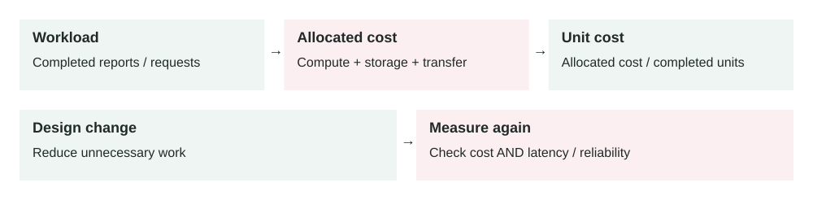
Compare cost per useful outcome, rather than only the total bill. A cheaper design can lose its advantage if it increases errors, delays, or operational effort.
Cost-aware architecture means designing systems so cost is visible, bounded, and connected to business value, not treated as a surprise after deployment.
The problem it solves
Cloud systems can scale quickly, but bills can scale just as quickly. A slow query may require bigger databases. An unbounded API may transfer huge data. A queue backlog may create thousands of workers. A verbose logging setup may store terabytes of data nobody reads.
Cost-aware architecture gives engineers a practical question: what does it cost to serve one user action, one tenant, one API request, one order, one export, or one background job?
Traffic / workload → Resources used → Cost allocation → Unit cost → Architecture decision
How it works
- Choose the business unit you care about, such as cost per order or cost per tenant.
- Measure the resources used by that unit: compute, database, cache, storage, network, logs, and third-party APIs.
- Tag or group infrastructure so cost can be traced to services, teams, environments, and customers.
- Set budgets and alerts for unexpected growth.
- Optimize the biggest cost drivers without breaking reliability, security, or user experience.
- Repeat as traffic, pricing, and architecture change.
The goal is not always the lowest bill. The goal is the lowest responsible cost for the required reliability, performance, security, and product value.
Main components
- Unit cost: cost per useful business unit, such as request, signup, order, invoice, or tenant.
- Cost allocation: tags, labels, accounts, projects, or namespaces that connect spend to ownership.
- Demand management: reducing unnecessary work through caching, pagination, batching, and limits.
- Supply management: matching capacity to demand with autoscaling, right-sizing, and scheduling.
- Pricing model: choosing on-demand, reserved, spot, serverless, or managed services deliberately.
- Review loop: regular cost review, anomaly alerts, and architecture follow-up.
Example 1: expensive report endpoint
A report endpoint costs very little for small customers but becomes expensive for enterprise tenants. Each request scans millions of rows, generates a PDF, stores a file, and writes detailed logs. The team first thinks it needs a larger database.
A cost-aware review shows the real issue: users repeatedly generate the same report. The team adds caching for completed reports, uses pagination for interactive views, and moves large exports to a queue. The database upgrade is delayed because repeated work is removed.
Example 2: production bill spike
A media app launches a new image-processing feature. One viral customer uploads 2 million images in a weekend. Autoscaling works correctly, but compute cost rises 7x, object storage writes increase sharply, and observability cost grows because every processing step logs a large JSON payload.
The team introduces per-tenant quotas, cheaper lifecycle storage for originals, batch processing for low-priority transformations, log sampling for successful jobs, and alerts on cost per processed image. The feature stays available, but cost now grows closer to business value.
When to use it
- A workload is growing and infrastructure cost is becoming material.
- A feature uses expensive resources such as data warehouses, AI APIs, SMS, storage, or high network transfer.
- You operate a multi-tenant SaaS product where one customer can drive disproportionate cost.
- You need to choose between scaling up, scaling out, caching, batching, or redesigning a flow.
- You want engineering teams to own cost as part of production quality.
When not to over-optimize
- The service is early-stage and cost is tiny compared with product learning speed.
- Optimization would add complexity that increases operational risk.
- The savings are smaller than the engineering time required to achieve them.
- The change would weaken security, reliability, or customer experience.
Implementation considerations
- Tag resources by service, environment, owner, and tenant tier where possible.
- Track unit cost for key flows: signup, checkout, report, search, export, and background job.
- Set budgets and anomaly alerts before the system grows.
- Right-size databases, containers, queues, and caches using real utilization metrics.
- Use autoscaling carefully; it solves capacity but can hide runaway demand.
- Move expensive synchronous work to async jobs when the user does not need an immediate result.
- Review observability retention, high-cardinality labels, and verbose logs regularly.
Security considerations
- Do not cut security controls just to lower cost.
- Protect billing dashboards and cost allocation data because they reveal architecture and customer behavior.
- Set quotas for abuse-prone paid actions such as SMS, email, AI calls, exports, and file processing.
- Use least privilege for cost tools that can modify budgets, resources, or reservations.
- Keep audit logs for cost-impacting admin actions like quota increases and resource changes.
Reliability concerns
- Aggressive downscaling can cause cold starts, queue delays, or failed requests.
- Spot or interruptible capacity can save money but needs graceful interruption handling.
- Reserved capacity can lower cost but may become waste if architecture changes.
- Deleting "unused" resources without ownership review can break disaster recovery or audits.
- Cost alerts should be actionable; noisy alerts get ignored like noisy reliability alerts.
Cost and performance are connected. Faster queries often use less CPU and I/O. Smaller responses reduce bandwidth and client work. Better caching reduces database pressure. But some cost reductions can hurt performance, such as under-provisioning a database or moving too much work to slow cold-start paths. Optimize with measurements, not guesses.
Key trade-offs
- Lower cost vs simpler operations: managed services cost more directly but can reduce engineering burden.
- On-demand flexibility vs committed discounts: commitments reduce price but reduce flexibility.
- Autoscaling vs budget predictability: autoscaling protects availability but can grow spend quickly.
- Retention vs investigation depth: shorter telemetry retention saves money but limits incident analysis.
Common mistakes and edge cases
- Optimizing the largest bill line without checking unit cost or business value.
- Ignoring network egress, logs, backups, snapshots, and third-party API fees.
- Letting dev, staging, and preview environments run like production all weekend.
- Using autoscaling without quotas, budgets, or anomaly alerts.
- Buying commitments before workload patterns are stable.
- Reducing observability so much that incidents become harder and more expensive.
- Making one customer's heavy workload subsidized by all other tenants.
Connection to previous lessons
Cache-aside can reduce repeated database work. API pagination reduces network and database cost per request. Rate limiting protects against runaway usage. Observability gives the measurements needed for unit cost. Containerization and horizontal scaling make capacity flexible, but flexible capacity still needs cost guardrails.
Design exercise
You run a SaaS analytics product. One dashboard request reads from Postgres, Redis, object storage, and a data warehouse. Define the unit cost you would track, the resource tags you need, three cost metrics, two budget alerts, and one architecture change you would try before buying a bigger database.
Primary source
Read: AWS Well-Architected Framework: Cost Optimization Pillar .
Ask a follow-up question if any part of the design is unclear.
Contents · Markdown edition